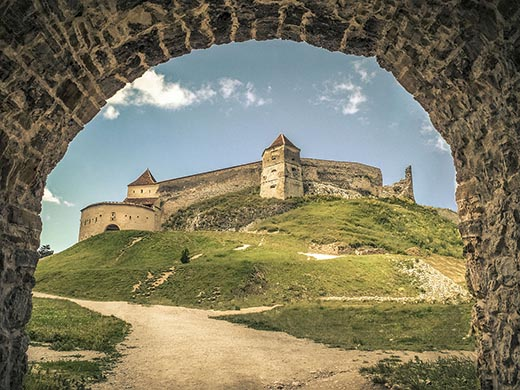

Cetatea Rasnov
Cetatea Râșnov este ansamblul fortificat situat pe dealul calcaros aflat la sudul orașului Râșnov din județul Brașov, unul din cele mai bine păstrate ansambluri fortificate din Transilvania. Cele mai vechi structuri păstrate până în prezent datează din secolul al XIV-lea, probabil pe locul fortificației din lemn ridicate de Cavalerii Teutoni la începutul sec. al XIII-lea.
Cetatea Râșnov controla prin poziția sa strategică accesul în Transilvania dinspre Valea Râșnoavei. Dată fiind importanța trecătorilor montane spre teritoriile sud-carpatice, drumul Branului a fost supravegheat militar și după alungarea cavalerilor teutoni, regalitatea maghiară încredințând fortificația de la Râșnov cavalerilor ordinului Sfintei Cruci.[2] Aceștia au fost subordonați fie comitelui secuilor, fie voievodului Transilvaniei. Până la mutarea vămii de la Rucăr la Bran și construirea cetății Bran pentru protejarea vămii regale la sfârșitul secolului al XIV-lea, cetatea Râșnov era prima fortificație lângă drumul Branului, după intrarea în Transilvania.
În partea superioară a Țării Bârsei, la circa 15 km depărtare sud-vestică de orașul Brașov, pe vechiul drum comercial care lega – prin trecătoarea Bran – bătrâna cetate a Brașovului de capitala de odinioară a Țării Românești, Câmpulung Muscel, se află orașul Râșnov, menționat deseori în documentele medievale ca orășel-târg. Cetatea este poziționată pe un deal stâncos, imprejmuit de pǎdure, unde singura cale de acces este dinspre est, arhitectura sa fiind adaptatã reliefului, fortificarea urmărind eficiența apărǎrii dealului.
Prima mențiune documentară despre cetatea țărănească a Râșnovului datează din anul 1335 când cu ocazia unei noi năvăliri a tătarilor în Țara Bârsei, a fost pustiit întregul ținut, în afară de cetatea de pe dealul Tâmpa de la Brașov și de cetatea Râșnovului, care fiind puternic fortificate au rezistat atacurilor, salvând viața locuitorilor refugiați între zidurile lor.
Înfatisarea cetății a cunoscut pânǎ în prezent numeroase modificǎri. Imaginea contemporanǎ totuși pǎstreazǎ elemente arhitecturale care pot reconstitui istoria unei fortificații care a rezistat cu succes asediilor la care a fost supusǎ. Tipologia cetății ne este demonstrată de dimensiunile acesteia, aproximativ 3500 mp ca suprafațǎ; materialele folosite pentru ridicarea fortificațiilor au fost piatra și cǎrămida legate prin mortar simplu, fortificații încadrate de 8 turnuri patrulatere si unul poligonal.
În timpul șederii cavalerilor teutoni în Țara Bârsei (1211-1225) au fost aduși în această regiune primii coloniști sași, dintre care o parte au fost așezați la Râșnov alături de populația românească băștinașă, contribuind prin munca lor la dezvoltarea acestei vechi așezări. Din această perioadă datează și porțiunea cea mai veche a cetății.
Accesul în cetatea propriu-zisă nu se face direct, ci printr-o incintǎ înconjuratǎ de un zid de piatrǎ, aflatǎ în prezent în ruină, având în extremitatea de rǎsărit un turn de plan dreptunghiular, din care se păstrează numai parterul, iar din celelalte trei laturi, sud, vest, vest – nord zidurile sunt flancate de pante abrupte cu o înălțime de aproximativ 150 m. Zidurile dinspre vest – nord și est erau apǎrate de o galerie continuǎ din 2 anteforturi și 7 turnuri. Accesul în cetate este cea mai veche parte a cetății, fiind construită numai din piatrǎ, spre deosebire de cetatea propriu–zisă unde întâlnim și cărămida.
In iulie 2001, aici a fost descoperit un tezaur care a zăcut ascuns mai bine de 400 de ani lângă unul dintre turnurile de piatră de la intrarea în cetate. Comoara constă în cuțite, catarame, inele pentru harnașamente, vârfuri de săgeți și de arbaletă, piese de uz comun, un compas, un vârf de burghiu, piese de la sobe din ceramică, un ac de păr sau de pălărie din argint aurit cu montură de piatră semiprețioasă. Pe lânga acestea, au mai fost găsite și trei căni din cositor de dimensiuni diferite, decorate, una purtând chiar marca de proprietar, având înscris pe capac anul 1600. În lădița de lemn în care erau aceste căni se mai aflau 416 monede de argint bătute în perioada 1509 - 1610 de emitenții din zona Principatului Transilvaniei.
În prezent, turiștii mai pot vizita în interiorul cetății și muzeul de artă feudal, în care sunt expuse arme, unelte, galerii, mobilier de epocǎ, stampe, armuri, porturi specifice secolului, diverse fotocopii ale documentelor din acea vreme. În muzeu mai sunt expuse și cateva obiecte neobisnuite secolului nostru, și anume, o mască de tortură și un jug care folosea la transportarea prizonierilor. În casele ocupate de vechii locuitorii ai Râșnovului, cu secole în urmă, s-au amenajat buticuri de unde turiștii pot achiziționa diferite suveniruri, pietre semi-prețioase, obiecte de artă, cǎrți în care sunt prezentate istoria și tradiția locului, etc. În centrul cetății a mai fost amenajat și un bar-terasă, unde turiștii se pot odihni după lunga plimbare printre ruine. Trebuie sǎ amintim și de tirul cu arc, unde doritorii își pot exersa priceperea și precizia.